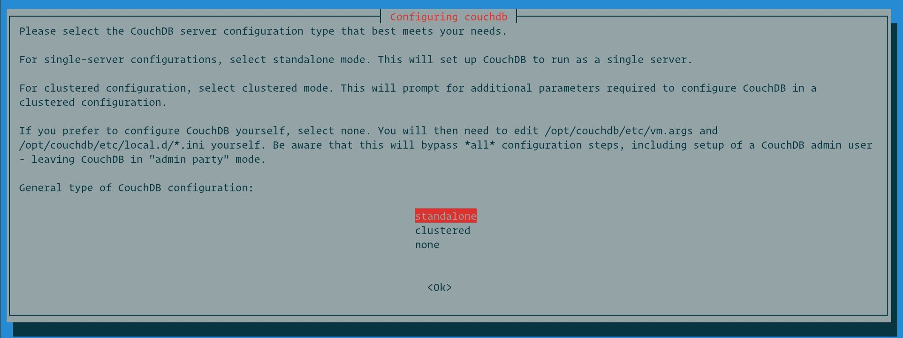
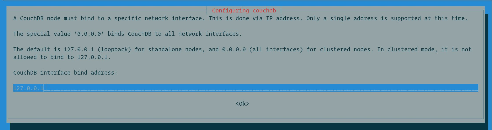
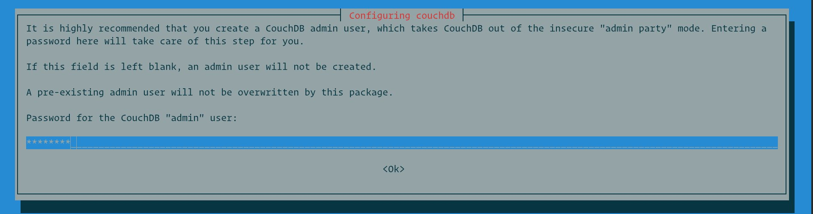
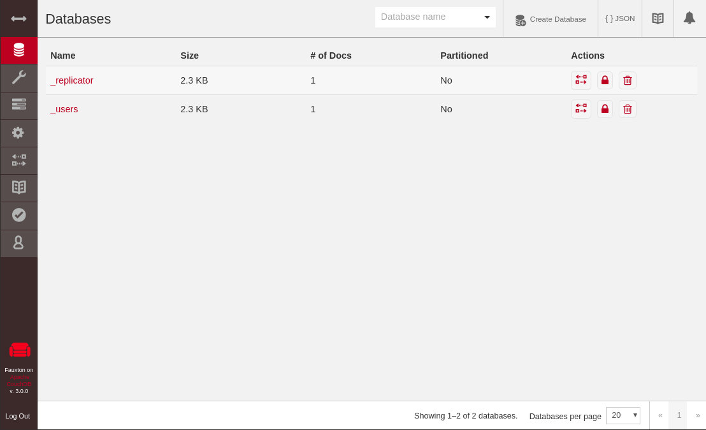

在 Debian 10 上 CouchDB 安装教程
Apache CouchDB 是由 Apache Software Foundation 开发的免费的开源 NoSQL 数据库。它即可以用作单节点数据库，也可以部署为集群数据库。
CouchDB 服务器将其数据存储在数据库中，该数据库包含 JSON 结构的文档。每个文档都包含许多字段和附件。字段可以包括文本，数字，列表，布尔值等。 CouchDB 包括一个 RESTful HTTP API ，您可以通过这个 API 读取，创建，编辑和删除数据库文档。
本文介绍了如何在 Debian 10 Buster 上安装 CouchDB 。
启用 CouchDB 存储库
在 CentOS 8 上安装 CouchDB 的最简单方法是启用供应商存储库并安装二进制软件包。
以超级用户或具有 sudo 特权的用户身份运行以下命令，以启用 CouchDB 存储库并导入 GPG 密钥：
echo "deb https://apache.bintray.com/couchdb-deb buster main" | sudo tee -a /etc/apt/sources.list
curl -L https://couchdb.apache.org/repo/bintray-pubkey.asc | sudo apt-key add -
在 Debian 上安装 CouchDB
启用存储库后，更新软件包列表并安装 CouchDB ：
sudo apt update
sudo apt install couchdb
首先，安装程序将询问您是要安装单节点的数据库还是群集模式的数据库 。本教程中我们安装单服务器单节点数据库。

接下来，我们设置 CouchDB 绑定的网络接口的 IP 地址。对于单服务器设置，请保留默认设置 127.0.0.1 。如果要配置集群，请输入接口 IP 地址或输入 0.0.0.0 （它告诉 CouchDB 绑定到所有网络接口）。

下一步，设置管理员密码。强烈建议设置密码，并将 CouchDB 退出不安全的“管理员”模式。如果将此字段保留为空白，则不会创建 admin 用户。

确认密码，然后继续安装。
验证 CouchDB 安装
CouchDB 服务器运行在 localhost:5984 。如果要确认安装是否成功，服务是否正在运行，请运行以下 curl 命令，该命令将以 JSON 格式打印有关 CouchDB 数据库的信息：
curl http://127.0.0.1:5984/
输出将如下所示：
{
"couchdb":"Welcome",
"version":"3.0.0",
"git_sha":"03a77db6c",
"uuid":"adab3f42ce6a06245d2955c1d6832266",
"features":[
"access-ready",
"partitioned",
"pluggable-storage-engines",
"reshard",
"scheduler"
],
"vendor":{
"name":"The Apache Software Foundation"
}
}
为了清楚起见，对输出进行了格式化。
如果您更喜欢 GUI ，则可以在以下位置访问 CouchDB 基于 Web 的界面 Fauxton ：
http://127.0.0.1:5984/_utils/

结论
我们已经向您展示了如何安装 CouchDB Debian10 。您可以在 Apache CouchDB 文档中找到有关此主题的更多信息。